d140502
nfoWorks
devNote
Annotating
XML Documents
Create Baseline Plaintext Replicas
|
|
d140502
nfoWorks
devNote |
0.04 2017-06-14 20:22 |
- Latest version of Annotating XML Documents: available on the Internet at
<http://nfoWorks.org/dev/2014/05/d140502b.htm>
- This Create Baseline Plaintext Replicas version is available at <http://nfoWorks.org/dev/2014/05/d140502d.htm>.
It is possible to generate the baseline replicas of an XML document using scripts and small programs. The procedure illustrated here is essentially manual, making use of desktop productivity software and a simple text editor (such as Notepad). While this becomes a little involved, it demonstrates the conditions involved in obtaining to a plaintext replica with numbered lines.
Microsoft Office 2013 Excel is used for conversion of the XML document as text to a plaintext replica with an additional line-numbering column. There is sufficient information to be able to employ alternative tools for this portion of creating replicas of XML documents that are amenable to use in annotations, commentaries, and other custom activities. Use of other text-handling tools can be more straightforward, especially if indentation adjustments (essentially the elimination of tabs) are not required as they are with Excel.
The examples illustrate the creation of annotation forms of the OpenDocument v1.2 Manifest Schema, an XML document although named with a .rng extension. The file that the procedure examples started with is [n140504b3].
1. Prerequisites
2. Importing into Excel
3. Adding Line Numbers
4. Setting a Fixed-Pitch Font
5. Correcting the Spacing and Indentation of Text
6. Saving and Verifying the Work
7. References
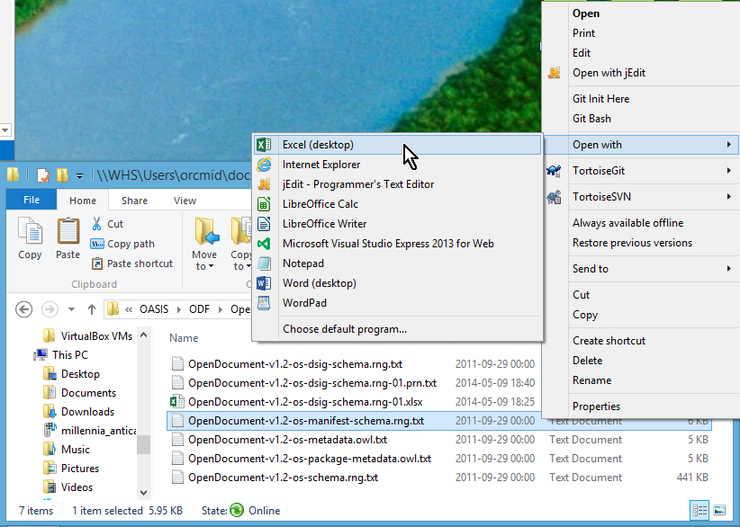
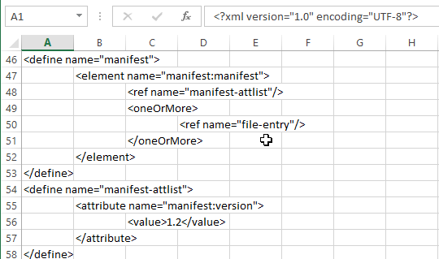
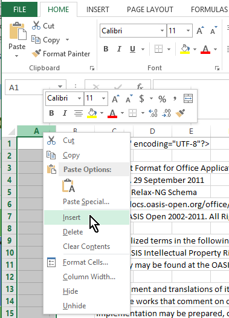
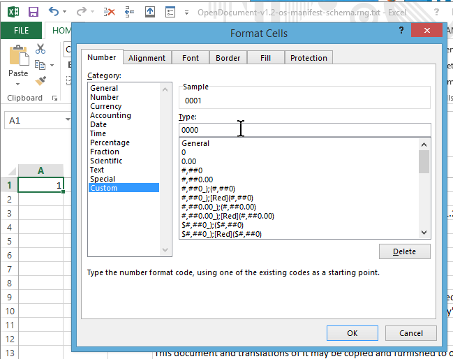
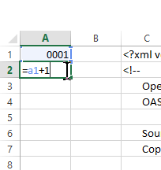
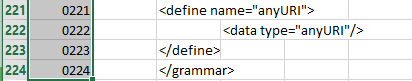
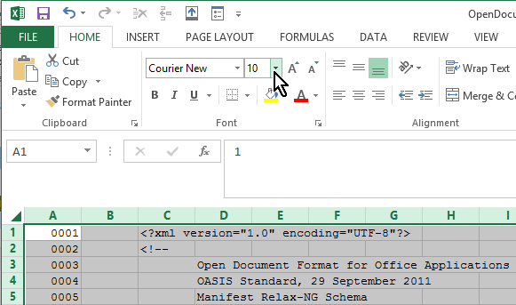
It is desirable to remove unnecessary spacing in the line-number column and in the empty column between the line numbers and the imported text. In addition, controlling the width of the empty cells that reflect tabbed indentations of the original file is useful. In the illustration, the tabs introduce columns that are essentially 8 characters wide. These can be reduced to a more-compact width by manipulating the spreadsheet columns.
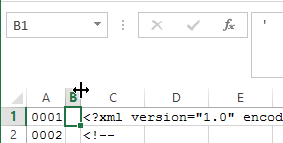
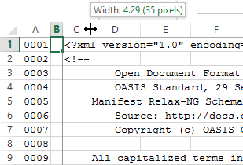
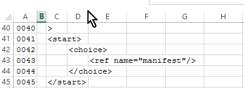
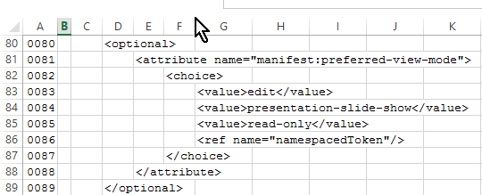
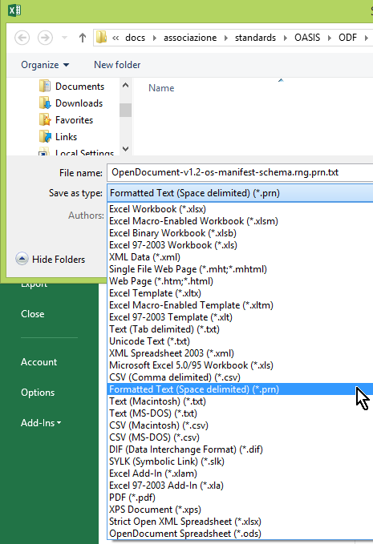
- [n140504b3]
- OASIS Open. Open Document v1.2 Manifest Schema. Part of OpenDocument Format for Office Applications (OpenDocument) Version 1.2. 29 September 2011 OASIS Standard. Schema file OpenDocument-v1.2-os-manifest-schema.rng dated 2011-09-29 is available at <http://docs.oasis-open.org/office/v1.2/os/>. The version used simply has .txt added to the end of the file name, with no other modifications.
- [n140504d1]
- Hamilton, Dennis E. Open Document v1.2 Manifest Schema plaintext replica. Derived from n140504d2 on 2014-05-11. This is an exact replica with a line-numbering column at the beginning of each of the original 224 lines.
- [n140504d2]
- Hamilton, Dennis E. Open Document v1.2 Manifest Schema plaintext replica spreadsheet. Derived from n140504b3 on 2014-05-11. This Microsoft Office 2013 Excel spreadsheet is the edited form from which n140504d1 was produced
- Hamilton, Dennis E.
- Annotating XML Documents: Create Baseline Plaintext Replicas. nfoWorks devNote page d140502d 0.04 June, 2014. Accessed at <http://nfoWorks.org/dev/2014/05/d140502d.htm>.

|
created 2014-05-11-17:55 -0700 (pdt) |